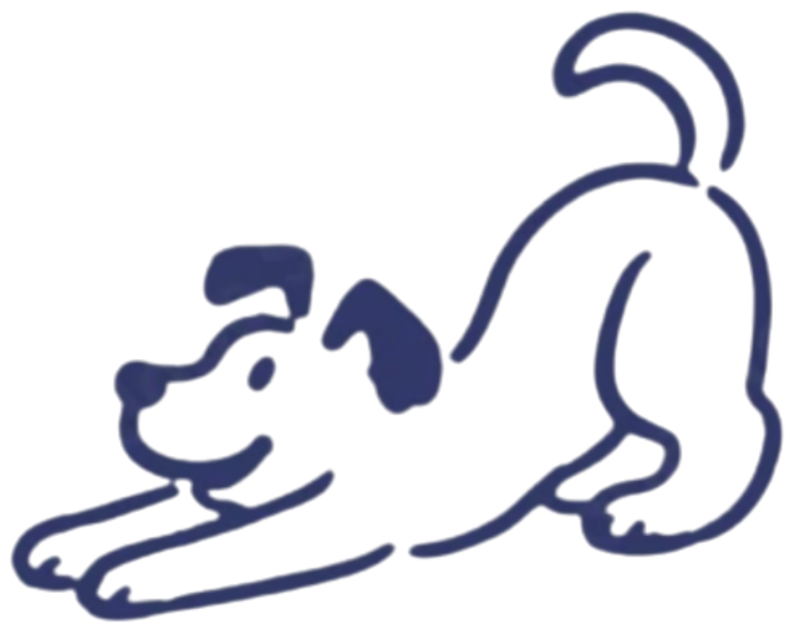
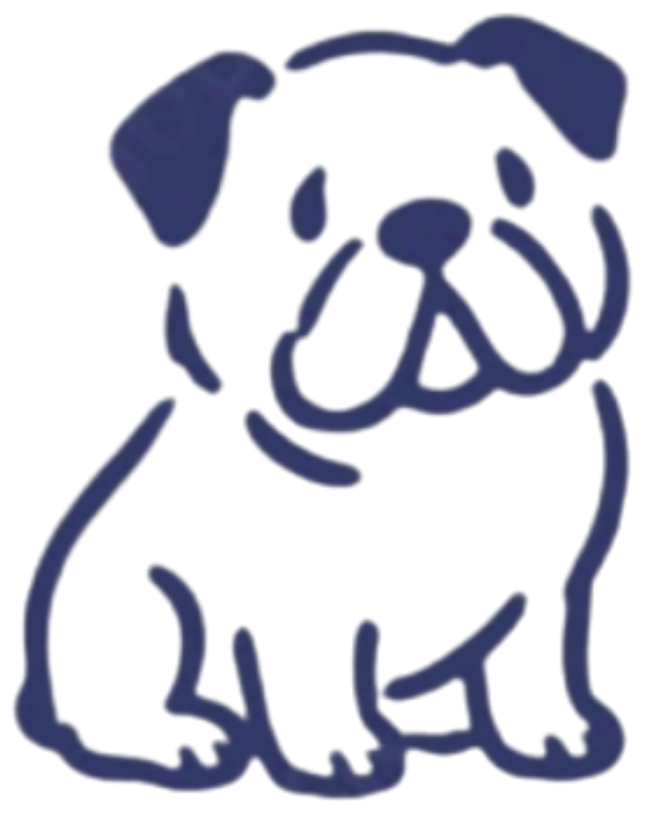
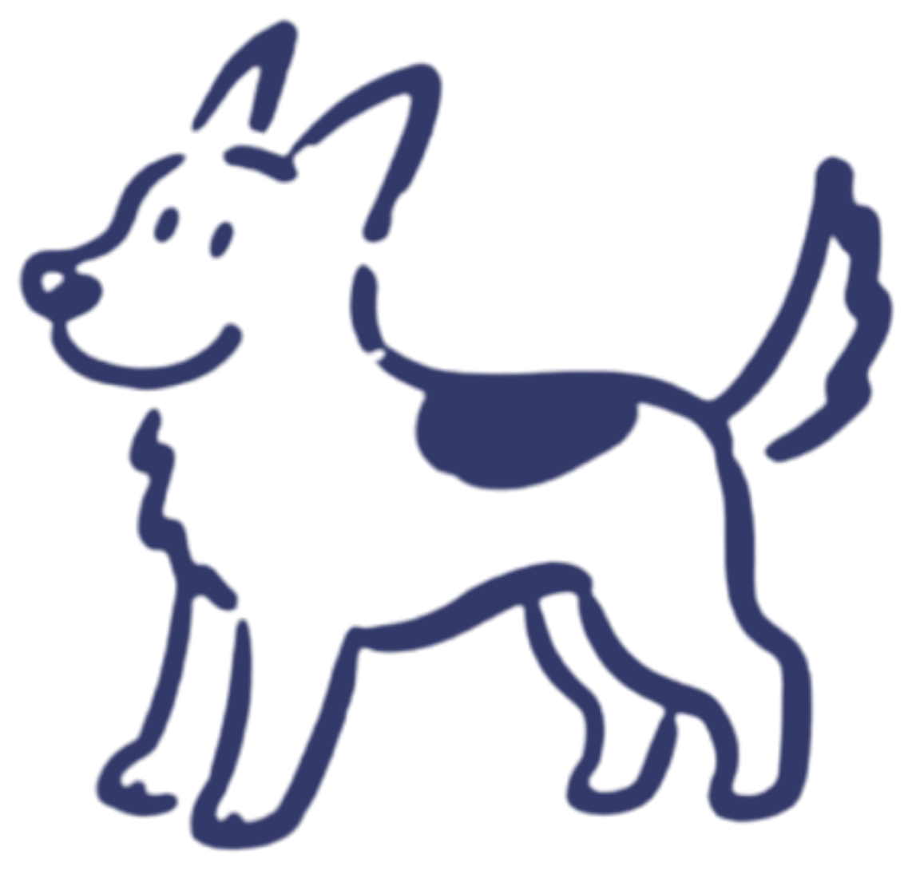
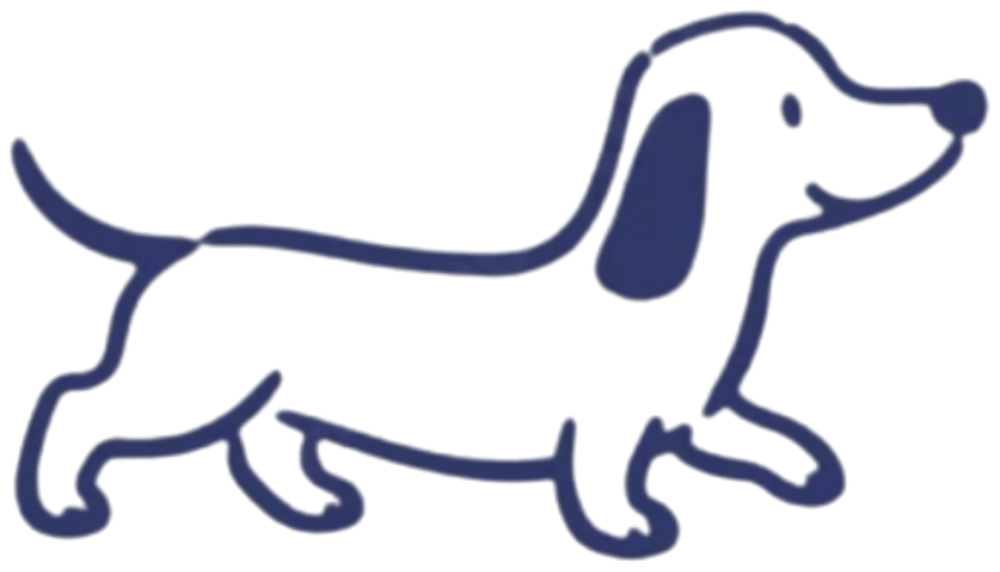
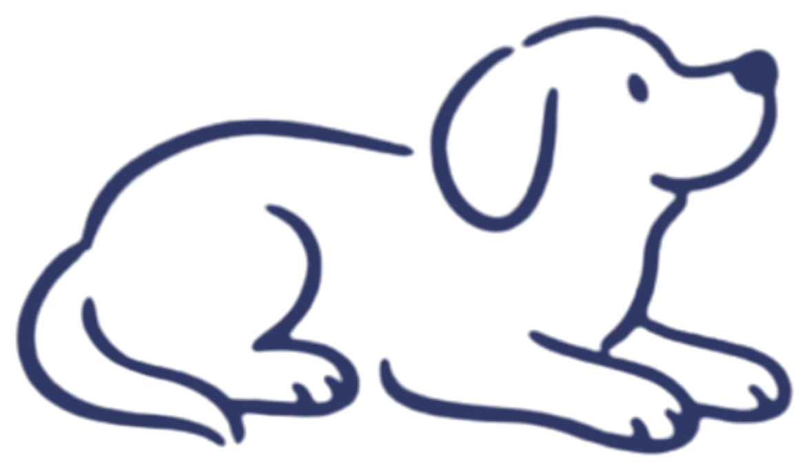
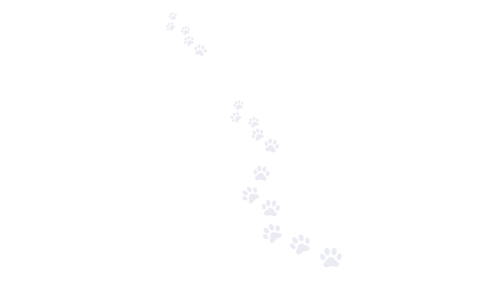
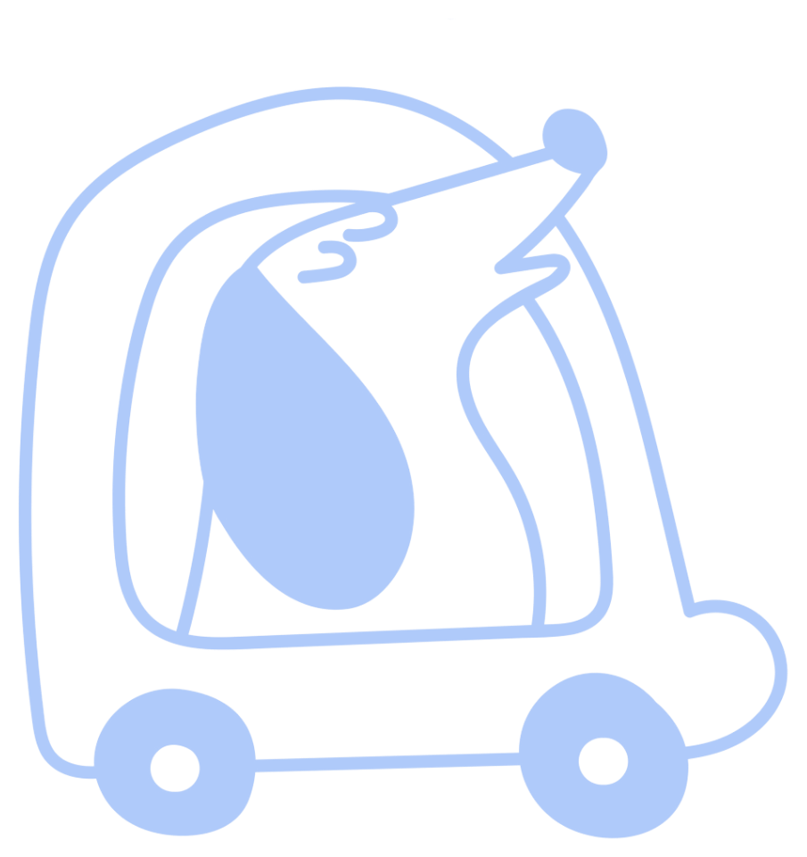
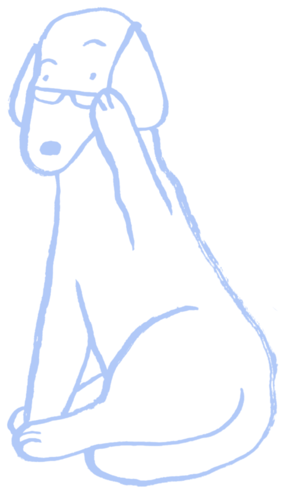
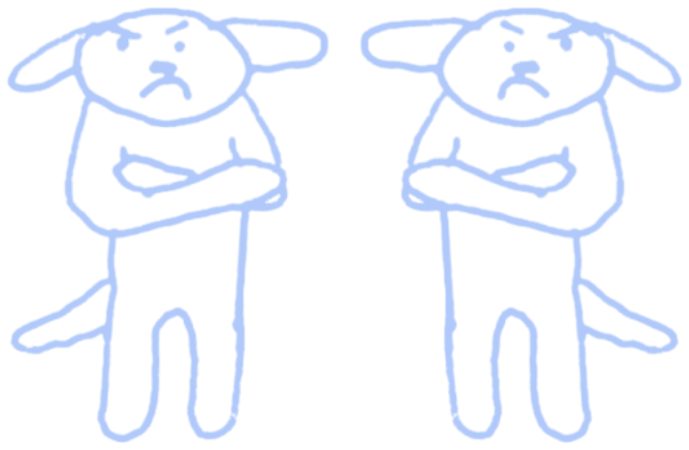
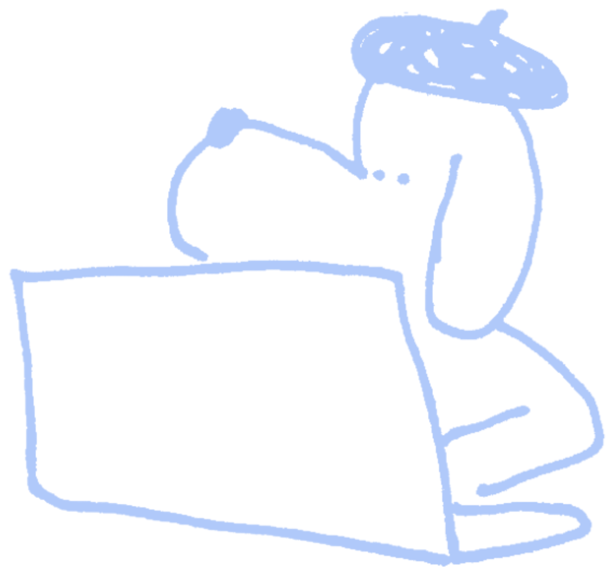

01
Vyberete si výlet
Zvolíte si, jak často má pes jezdit – 2x týdně, 3x týdně, nebo jen jednorázově – a kam. Klidně přes web nebo zprávou, jak je vám pohodlnější.

Svážíme brněnské psy na celodenní výlety do lesa, protože si zaslouží se pořádně vyřádit! Ve smečkách max. šesti pejsků, s jedním zkušeným vodičem, si můžou pořádně proběhnout packy, čmuchat, kam je nos táhne, a být prostě zase na chvíli sami sebou.
Chápeme, že svěřit psa cizím lidem na celý den chce trochu odvahy. Proto vám přesně popíšeme, co se bude dít – od chvíle, kdy nám psa poprvé předáte, až po fotku z lesa, která vám večer přistane v mailu.

Zvolíte si, jak často má pes jezdit – 2x týdně, 3x týdně, nebo jen jednorázově – a kam. Klidně přes web nebo zprávou, jak je vám pohodlnější.

Krátký telefonát, kde se zeptáme na to podstatné – jaký je váš pes povahou, jak vychází s ostatními psy, jestli má nějaké zvláštnosti nebo na co si dát pozor. Podle toho víme, do jaké smečky ho zařadit.

Ráno vyzvedneme psa kdekoli v Brně a okolí – nezáleží nám na tom, kde bydlíte. Dodávka má klimatizaci a bezpečnostní přepravní boxy schválené Krajskou veterinární správou Jihomoravského kraje.

Vyrážíme do lesa i k vodě – psi si smí zaplavat, čmuchat a pořádně se proběhnout. Na cestě jsou vždy v bezpečí na stopovačce, doopravdy na volno je pouštíme jen v uzavřených výbězích, kde si můžou běhat bez vodítka a bez rizika. Každý pes má navíc GPS obojek, takže víme, kde přesně je, po celou dobu výletu.
Během dne vám pošleme pár fotek přímo z lesa a mapku se skutečnou trasou, kterou pes ušel – obvykle 6 až 10 kilometrů podle lokality a počasí.

Večer psa přivezeme zpátky – unaveného, spokojeného a trochu jiného, než jsme ho ráno vyzvedli (les je zkrátka les). Než ho předáme, aspoň základně ho očistíme, ať vám doma nezůstane celý lesní den na koberci.
Chodíme tam, kde mají psi prostor běžet, čichat a bezpečně poznávat svět. Trasy volíme podle počasí, velikosti smečky a nálady jednotlivých psů.

Ideální pro testovací den nebo když chcete službu jen vyzkoušet.
Fixní dny, výměna po domluvě.
Fixní dny, výměna po domluvě.
Oba balíčky začínají vstupním testovacím dnem – ten se platí zvlášť jako jednorázová exkurze.
Ať víte, komu psa svěřujete
Přepravní dodávka i bezpečnostní boxy jsou schválené Krajskou veterinární správou Jihomoravského kraje – ne interní prohlášení, ale reálná kontrola.

Kryje případ, kdy by se něco stalo vašemu psovi, nebo kdyby přes něj došlo ke škodě třetí straně.

Od založení Brněnské psiny se nestal jediný vážnější incident na svozu ani na výletě. Chceme, aby to tak zůstalo, proto přijímáme méně psů, než bychom mohli.

Žádný pes nejde do smečky bez toho, že bychom si nejprve promluvili s vámi a strávili s ním celý testovací den v terénu.

Máte konkrétní den?
Napište nám a společně najdeme výlet, který zapadne do vašeho týdne i do temperamentu vašeho psa.
Telefonicky se ozveme zpět, kde doladíme balíček, logistiku vyzvednutí a všechny důležité detaily.
Dopřejte mu výlet, novou smečku a bezpečný návrat domů.
Rezervovat